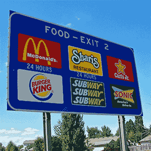

115KB

49.4KB

5.08KB
18.85KB
14.50KB
8.66KB
52.58KB
41.85KB
14.83KB
12.32KB
6.21KB
10.5KB

57.52KB
26.75KB
34.64KB
51.72KB
41.17KB
13.51KB
177.40KB
97.36KB
30.83KB
177.40KB
109.04KB
22.58KB

89B
210.15KB

5.20KB
JPEG Very High
JPEG Very High
SVG
| Original | 115KB |
49.4KB |
5.08KB |
| GIF 16 (with transparency) |  18.85KB |
14.50KB |
8.66KB |
| GIF 256 (with transparency) | 52.58KB |
41.85KB |
14.83KB |
| JPEG Low (10%) | 12.32KB |
6.21KB |
10.5KB |
| JPEG Very High (80%) | 57.52KB |
26.75KB |
34.64KB |
| PNG-8 | 51.72KB |
41.17KB |
13.51KB |
| PNG-24 (without transparency) | 177.40KB |
97.36KB |
30.83KB |
| PNG-24 (with transparency) | 177.40KB |
109.04KB |
22.58KB |
| SVG | 89B |
210.15KB |
5.20KB |
| Optimized (you choose) | JPEG Very High |
JPEG Very High |
SVG |